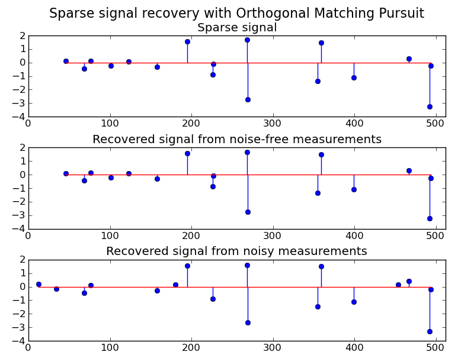

Orthogonal Matching Pursuit¶
Using orthogonal matching pursuit for recovering a sparse signal from a noisy measurement encoded with a dictionary
Python source code: plot_omp.py
print __doc__
import pylab as pl
import numpy as np
from sklearn.linear_model import orthogonal_mp
from sklearn.datasets import make_sparse_coded_signal
n_components, n_features = 512, 100
n_atoms = 17
# generate the data
###################
# y = Dx
# |x|_0 = n_atoms
y, D, x = make_sparse_coded_signal(n_samples=1,
n_components=n_components,
n_features=n_features,
n_nonzero_coefs=n_atoms,
random_state=0)
idx, = x.nonzero()
# distort the clean signal
##########################
y_noisy = y + 0.05 * np.random.randn(len(y))
# plot the sparse signal
########################
pl.subplot(3, 1, 1)
pl.xlim(0, 512)
pl.title("Sparse signal")
pl.stem(idx, x[idx])
# plot the noise-free reconstruction
####################################
x_r = orthogonal_mp(D, y, n_atoms)
idx_r, = x_r.nonzero()
pl.subplot(3, 1, 2)
pl.xlim(0, 512)
pl.title("Recovered signal from noise-free measurements")
pl.stem(idx_r, x_r[idx_r])
# plot the noisy reconstruction
###############################
x_r = orthogonal_mp(D, y_noisy, n_atoms)
idx_r, = x_r.nonzero()
pl.subplot(3, 1, 3)
pl.xlim(0, 512)
pl.title("Recovered signal from noisy measurements")
pl.stem(idx_r, x_r[idx_r])
pl.subplots_adjust(0.06, 0.04, 0.94, 0.90, 0.20, 0.38)
pl.suptitle('Sparse signal recovery with Orthogonal Matching Pursuit',
fontsize=16)
pl.show()